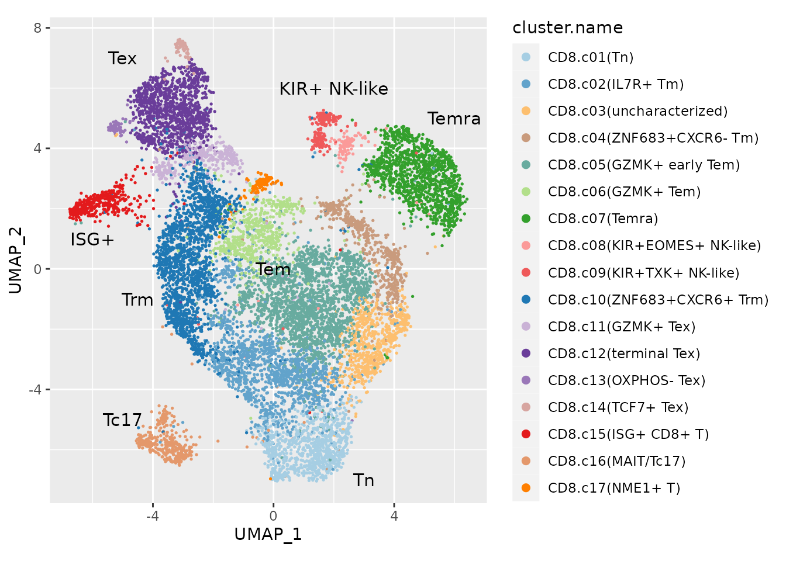
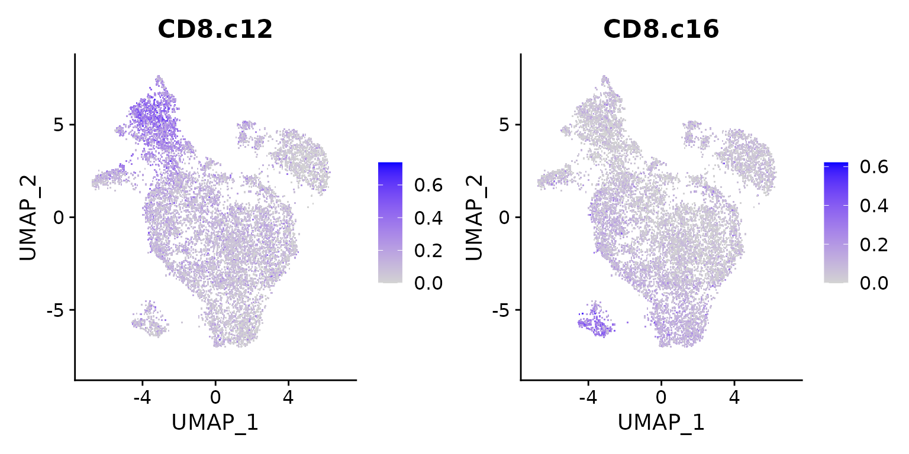
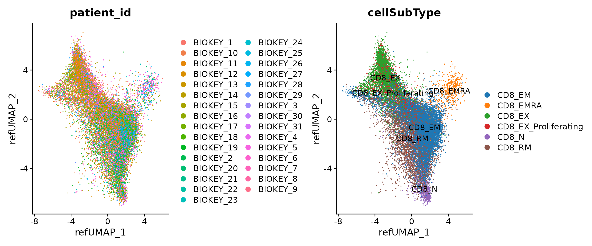
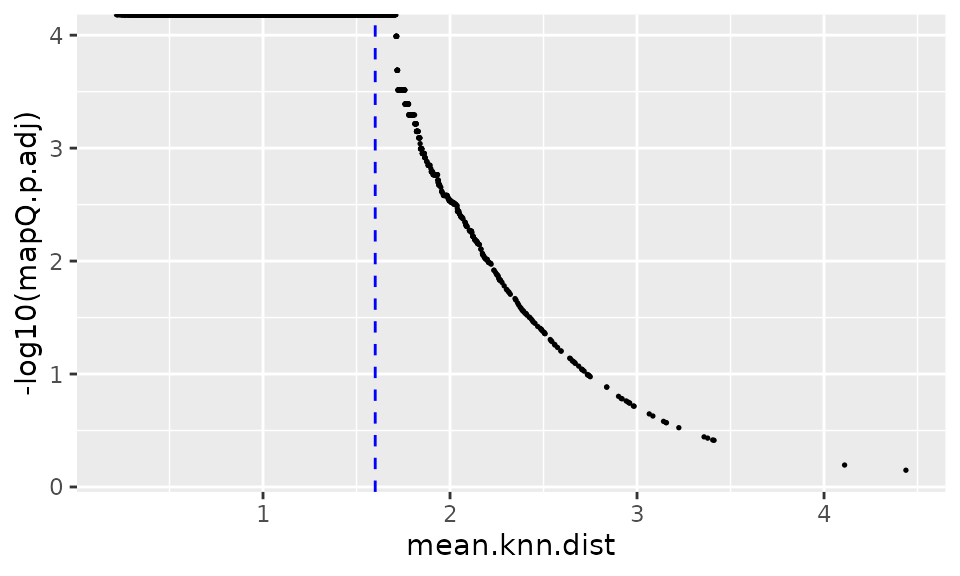
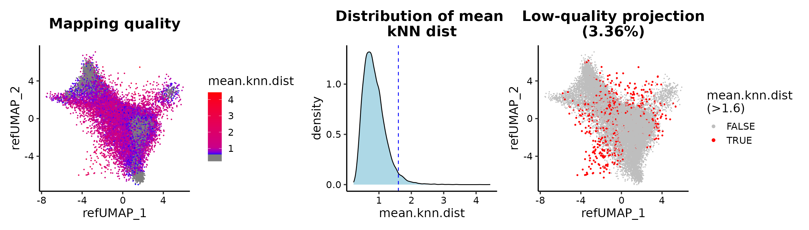
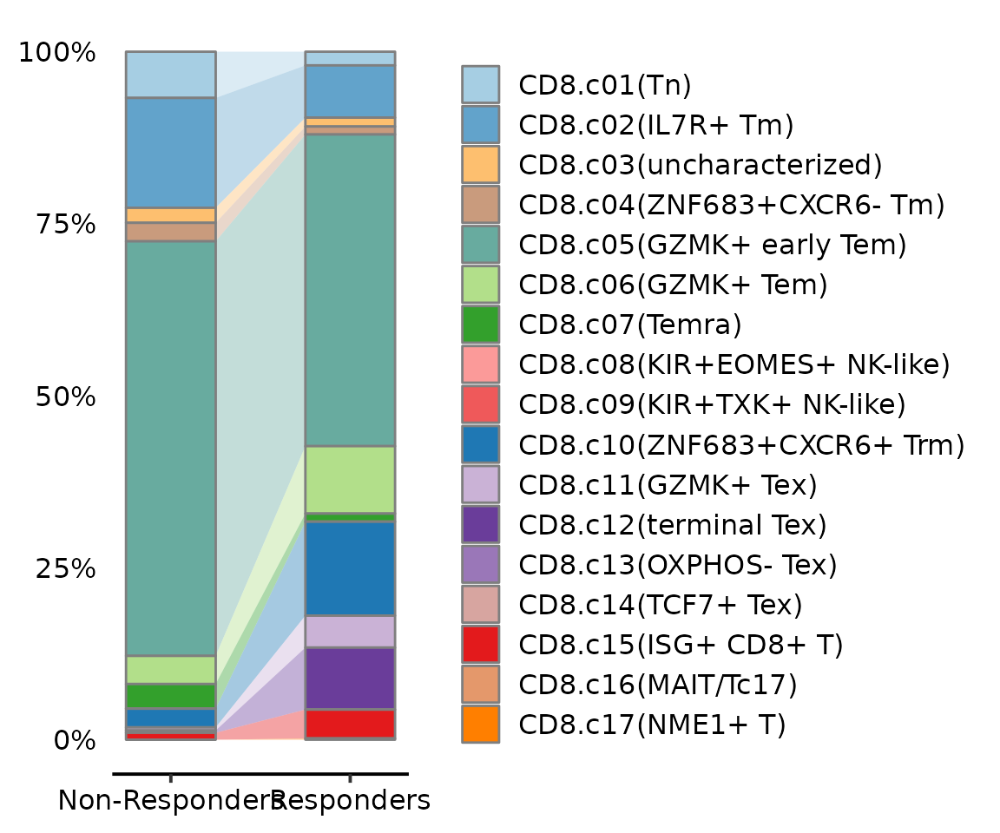
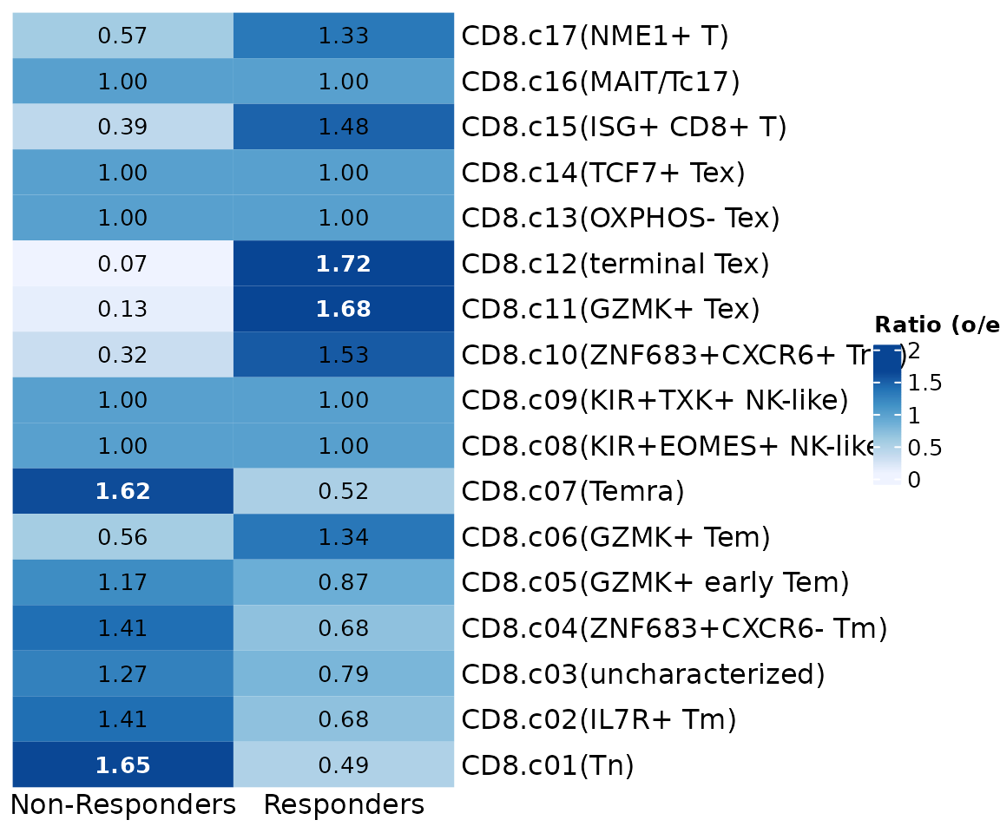
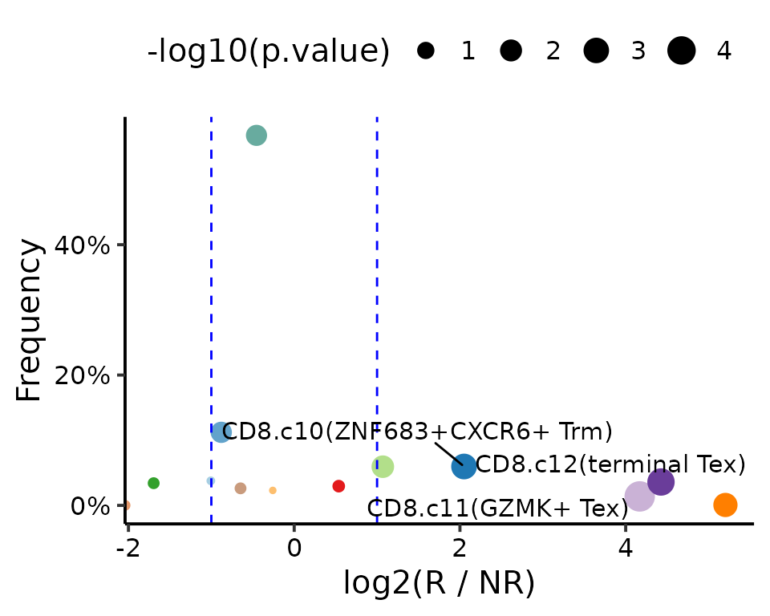
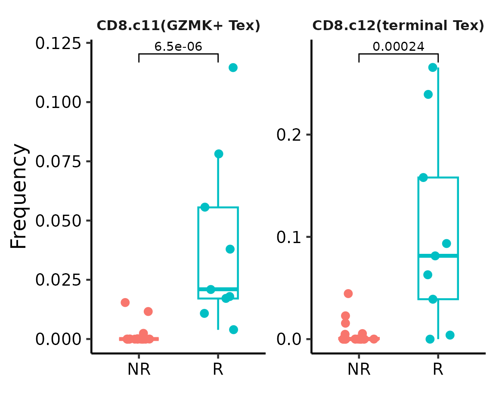

Accurate identification of the tumor-infiltrated T cell heterogeneity in cancer immunology study
Compiled: July 21, 2023
Source:vignettes/ICB_breast_cancer.Rmd
ICB_breast_cancer.RmdIn recent years, single-cell RNA-sequencing (scRNA-seq) enabled unbiased exploration of T cell diversity in health, disease and response to therapies at an unprecedented scale and resolution. However, a comprehensive definition of T cell “reference” subtypes remains elusive 1.
Several groups try to integrate T cells in the tumor micro-environment (TME) across different cancer types to build a pan-cancer T cell landscape. For example, Zheng et al. depicted a pan-cancer landscape of T cell heterogeneity in the TME and established a baseline reference for future scRNA-seq studies associated with cancer treatments 2.
In this tutorial, we demonstrate the process of projecting query T cells onto the pan-cancer T cell landscape (PTCL) to interpret the disparities in CD8 T cell heterogeneity between responsive and non-responsive patients with breast cancer who have undergone immune checkpoint blockade (ICB) therapy 3. This will be done using ProjectSVR.
Download related dataset
library(Seurat)
library(ProjectSVR)
library(tidyverse)
options(timeout = max(3600, getOption("timeout")))# reference data
# We provide reference in qs format for quicklyu saving and readling objects to and from disk.
# https://cran.r-project.org/web/packages/qs/vignettes/vignette.html
download.file(url = "", destfile = "ZhengLiangtao.CD8.seurat.qs")
# query data
download.file(url = "", destfile = "ICB_BRCA.1864-counts_cd8tcell_cohort1.seurat.rds"")Build Reference Model
Load reference dataset. See also
seu.ref <- qs::qread("ZhengLiangtao.CD8.seurat.qs")
data.plot <- seu.ref@misc$data.refplot$meta.data
ggplot(data.plot, aes(UMAP_1, UMAP_2, color = cluster.name), pt.size = .4) +
geom_point(size = .3) +
scale_color_manual(values = seu.ref@misc$data.refplot$colors) +
geom_text(inherit.aes = F, data = seu.ref@misc$data.refplot$text.pos,
mapping = aes(x, y, label = label), size = 4) +
guides(color = guide_legend(override.aes = list(size = 2))) +
coord_equal(ratio = 1) ### Transfer raw count matrix to gene set score matrix
top.genes <- seu.ref@misc$markers
top.genes <- lapply(top.genes, function(xx) head(xx, 20))
sapply(top.genes, length)## CD8.c01 CD8.c02 CD8.c03 CD8.c04 CD8.c05 CD8.c06 CD8.c07 CD8.c08 CD8.c09 CD8.c10
## 20 20 7 20 20 20 20 20 20 20
## CD8.c11 CD8.c12 CD8.c13 CD8.c14 CD8.c15 CD8.c16 CD8.c17
## 20 20 20 20 20 20 20
seu.ref <- ComputeModuleScore(seu.ref, gene.sets = top.genes, method = "UCell", cores = 20)
# The signature score matrix is stored in 'SignatureScore' assay
Assays(seu.ref)## [1] "RNA" "SignatureScore"
DefaultAssay(seu.ref) <- "SignatureScore"
FeaturePlot(seu.ref, features = c("CD8.c12", "CD8.c16"), pt.size = 1)
Training reference model
gss.mat <- FetchData(seu.ref, vars = rownames(seu.ref))
embeddings.df <- FetchData(seu.ref, vars = paste0("UMAP_", 1:2))
batch.size = 8000 # number of subsampled cells for each SVR model
n.models = 10 # number of SVR models trained
umap.model <- FitEnsembleSVM(feature.mat = gss.mat,
emb.mat = embeddings.df,
batch.size = batch.size,
n.models = n.models,
cores = 10)Save the reference model
ref.cellmeta stores:
[optional] colors: for plots
[optional] text.pos: text annotation on the reference plots
meta.data: cell meta data (embeddings + cell type information)
ref.cellmeta <- seu.ref@misc$data.refplot
bg.genes <- rownames(seu.ref[["RNA"]])
reference <- list(
"models" = list(
"umap" = umap.model
),
"genes" = list(
"gene.sets" = top.genes, # list
"bg.genes" = bg.genes # vector
),
"ref.cellmeta" = ref.cellmeta # list for reference plot
)
saveRDS(reference, "model.Zheng.CD8Tcell.rds")Map Query to Reference
Reference mapping
reference <- readRDS("model.Zheng.CD8Tcell.rds")
seu.q <- readRDS("ICB_BRCA.1864-counts_cd8tcell_cohort1.seurat.rds")
annotations <- c(
"E" = "Responders",
"n/a" = "n/a",
"NE" = "Non-Responders"
)
seu.q$group <- annotations[seu.q$expansion]
seu.q <- ProjectSVR::MapQuery(seu.q, reference = reference,
add.map.qual = T, ncores = 10)
p1 <- DimPlot(seu.q, reduction = "ref.umap", group.by = "patient_id")
p2 <- DimPlot(seu.q, reduction = "ref.umap", group.by = "cellSubType",
label = T) + ggsci::scale_color_d3("category20")
p1 + p2
Maping quality
Determine the threshold to distinguish the good and bad projections.
data.plot <- FetchData(seu.q, vars = c(paste0("refUMAP_", 1:2), "mean.knn.dist", "mapQ.p.adj"))
ggplot(data.plot, aes(mean.knn.dist, -log10(mapQ.p.adj))) +
geom_point(size = .3) +
geom_vline(xintercept = 1.6, linetype = "dashed", color = "blue")
QC plot for the reference mapping.
data.plot <- FetchData(seu.q, vars = c(paste0("refUMAP_", 1:2), "mean.knn.dist", "mapQ.p.adj"))
cut.off <- 1.6
low.qual.prop <- prop.table(table(data.plot$mean.knn.dist > cut.off))["TRUE"]
low.qual.prop <- round(low.qual.prop, 4) *100
p1 <- ggplot(data.plot, aes(refUMAP_1, refUMAP_2)) +
geom_point(aes(color = mean.knn.dist), size = .2) +
scale_color_gradientn(colours = c("blue", "red"), values = c(0.1, 0.2, 1)) +
ggtitle("Mapping quality") +
theme_classic(base_size = 15) +
theme(axis.text = element_text(color = "black"),
plot.title = element_text(hjust = .5, face = "bold"))
p2 <- ggplot(data.plot, aes(mean.knn.dist)) +
geom_density(fill = "lightblue") +
geom_vline(xintercept = cut.off, linetype = "dashed", color = "blue") +
ggtitle("Distribution of mean \nkNN dist") +
theme_classic(base_size = 15) +
theme(axis.text = element_text(color = "black"),
plot.title = element_text(hjust = .5, face = "bold"))
p3 <- ggplot(data.plot, aes(refUMAP_1, refUMAP_2)) +
geom_point(aes(color = mean.knn.dist > cut.off, size = mean.knn.dist > cut.off)) +
ggtitle(sprintf("Low-quality projection\n(%s%%)", low.qual.prop)) +
scale_color_manual(values = c("grey", "red")) +
scale_size_manual(values = c(0.1, 0.5), guide = "none") +
guides(color = guide_legend(title = sprintf("mean.knn.dist\n(>%s)", cut.off))) +
theme_classic(base_size = 15) +
theme(axis.text = element_text(color = "black"),
plot.title = element_text(hjust = .5, face = "bold"))
p1 + p2 + p3
Visualize the projected query cells onto the reference atlas.
PlotProjection(seu.q, reference, split.by = "cellSubType", ref.color.by = "cluster.name",
ref.size = .5, ref.alpha = .3, query.size = 1, query.alpha = .5, n.row = 2)
Label transfer
seu.q <- ProjectSVR::LabelTransfer(seu.q, reference, ref.label.col = "cluster.name")Differential cell population
Alluvia plot
seu.q <- subset(seu.q, group != "n/a" & timepoint == "Pre")
seu.q <- subset(seu.q, mean.knn.dist < 1.6)
seu.q$group <- factor(seu.q$group)
AlluviaPlot(seu.q@meta.data, by = "group", fill = "knn.pred.celltype",
colors = reference$ref.cellmeta$colors,
bar.width = .5)
Preference analysis
GroupPreferencePlot(seu.q@meta.data, group.by = "group",
preference.on = "knn.pred.celltype",
column_names_rot = 0, column_names_centered = TRUE)
Wilcoxon test
da.test <- AbundanceTest(cellmeta = seu.q@meta.data,
celltype.col = "knn.pred.celltype",
sample.col = "patient_id",
group.col = "group")
## Volcano plot
VolcanoPlot(da.test, xlab = "log2(R / NR)", ylab = "Frequency",
colors = reference$ref.cellmeta$colors)
## Box plot
BoxPlot(cellmeta = seu.q@meta.data, celltype.col = "knn.pred.celltype",
sample.col = "patient_id", group.col = "group",
celltypes.show = c("CD8.c12(terminal Tex)", "CD8.c11(GZMK+ Tex)"),
legend.ncol = 2) +
scale_x_discrete(labels = c("NR", "R"))
Session Info
## R version 4.1.2 (2021-11-01)
## Platform: x86_64-pc-linux-gnu (64-bit)
## Running under: CentOS Linux 7 (Core)
##
## Matrix products: default
## BLAS: /opt/R4.1/lib64/R/lib/libRblas.so
## LAPACK: /opt/R4.1/lib64/R/lib/libRlapack.so
##
## locale:
## [1] LC_CTYPE=en_US.UTF-8 LC_NUMERIC=C
## [3] LC_TIME=en_US.UTF-8 LC_COLLATE=en_US.UTF-8
## [5] LC_MONETARY=en_US.UTF-8 LC_MESSAGES=en_US.UTF-8
## [7] LC_PAPER=en_US.UTF-8 LC_NAME=C
## [9] LC_ADDRESS=C LC_TELEPHONE=C
## [11] LC_MEASUREMENT=en_US.UTF-8 LC_IDENTIFICATION=C
##
## attached base packages:
## [1] stats graphics grDevices utils datasets methods base
##
## other attached packages:
## [1] forcats_0.5.2 stringr_1.4.1 dplyr_1.0.10
## [4] purrr_0.3.4 readr_2.1.2 tidyr_1.2.1
## [7] tibble_3.1.8 ggplot2_3.4.1 tidyverse_1.3.2
## [10] ProjectSVR_0.1.0.9000 sp_1.5-0 SeuratObject_4.1.2
## [13] Seurat_4.2.0
##
## loaded via a namespace (and not attached):
## [1] utf8_1.2.2 reticulate_1.26 tidyselect_1.1.2
## [4] mlr3learners_0.5.4 htmlwidgets_1.5.4 BiocParallel_1.28.3
## [7] grid_4.1.2 Rtsne_0.16 mlr3misc_0.11.0
## [10] munsell_0.5.0 codetools_0.2-18 bbotk_0.5.4
## [13] ragg_1.2.2 ica_1.0-3 future_1.28.0
## [16] miniUI_0.1.1.1 mlr3verse_0.2.5 withr_2.5.0
## [19] spatstat.random_3.0-1 colorspace_2.0-3 progressr_0.11.0
## [22] highr_0.9 knitr_1.40 uuid_1.1-0
## [25] rstudioapi_0.14 stats4_4.1.2 ROCR_1.0-11
## [28] ggsignif_0.6.3 tensor_1.5 listenv_0.8.0
## [31] labeling_0.4.2 mlr3tuning_0.14.0 lgr_0.4.4
## [34] polyclip_1.10-0 farver_2.1.1 rprojroot_2.0.3
## [37] parallelly_1.32.1 vctrs_0.5.1 generics_0.1.3
## [40] clusterCrit_1.2.8 xfun_0.33 R6_2.5.1
## [43] doParallel_1.0.17 clue_0.3-61 isoband_0.2.5
## [46] spatstat.utils_3.0-1 cachem_1.0.6 assertthat_0.2.1
## [49] promises_1.2.0.1 scales_1.2.1 googlesheets4_1.0.1
## [52] rgeos_0.5-9 gtable_0.3.1 globals_0.16.1
## [55] goftest_1.2-3 rlang_1.0.6 systemfonts_1.0.4
## [58] GlobalOptions_0.1.2 splines_4.1.2 lazyeval_0.2.2
## [61] gargle_1.2.1 paradox_0.10.0 spatstat.geom_3.0-3
## [64] broom_1.0.1 checkmate_2.1.0 modelr_0.1.9
## [67] yaml_2.3.5 reshape2_1.4.4 abind_1.4-5
## [70] mlr3_0.14.0 backports_1.4.1 httpuv_1.6.6
## [73] tools_4.1.2 ellipsis_0.3.2 spatstat.core_2.4-4
## [76] jquerylib_0.1.4 RColorBrewer_1.1-3 BiocGenerics_0.40.0
## [79] ggridges_0.5.3 Rcpp_1.0.9 plyr_1.8.7
## [82] rpart_4.1.16 deldir_1.0-6 pbapply_1.5-0
## [85] GetoptLong_1.0.5 cowplot_1.1.1 S4Vectors_0.32.4
## [88] zoo_1.8-11 haven_2.5.1 ggrepel_0.9.1
## [91] cluster_2.1.4 here_1.0.1 fs_1.5.2
## [94] magrittr_2.0.3 data.table_1.14.2 scattermore_0.8
## [97] circlize_0.4.15 reprex_2.0.2 lmtest_0.9-40
## [100] RANN_2.6.1 googledrive_2.0.0 fitdistrplus_1.1-8
## [103] matrixStats_0.62.0 stringfish_0.15.8 qs_0.25.5
## [106] hms_1.1.2 patchwork_1.1.2 mime_0.12
## [109] evaluate_0.16 xtable_1.8-4 readxl_1.4.1
## [112] IRanges_2.28.0 gridExtra_2.3 shape_1.4.6
## [115] UCell_1.3.1 compiler_4.1.2 mlr3cluster_0.1.4
## [118] KernSmooth_2.23-20 crayon_1.5.1 htmltools_0.5.3
## [121] tzdb_0.3.0 mgcv_1.8-40 later_1.3.0
## [124] RcppParallel_5.1.6 RApiSerialize_0.1.2 lubridate_1.8.0
## [127] DBI_1.1.3 dbplyr_2.2.1 ComplexHeatmap_2.10.0
## [130] rappdirs_0.3.3 MASS_7.3-58.1 mlr3data_0.6.1
## [133] Matrix_1.5-1 cli_3.4.1 parallel_4.1.2
## [136] igraph_1.3.5 pkgconfig_2.0.3 pkgdown_2.0.6
## [139] plotly_4.10.0 spatstat.sparse_3.0-0 xml2_1.3.3
## [142] foreach_1.5.2 bslib_0.4.0 mlr3fselect_0.7.2
## [145] rvest_1.0.3 digest_0.6.29 sctransform_0.3.5
## [148] RcppAnnoy_0.0.19 mlr3filters_0.6.0 spatstat.data_3.0-0
## [151] cellranger_1.1.0 rmarkdown_2.16 leiden_0.4.3
## [154] uwot_0.1.14 curl_5.0.1 shiny_1.7.2
## [157] rjson_0.2.21 lifecycle_1.0.3 nlme_3.1-155
## [160] jsonlite_1.8.0 mlr3tuningspaces_0.3.0 desc_1.4.2
## [163] viridisLite_0.4.1 fansi_1.0.3 pillar_1.8.1
## [166] ggsci_2.9 lattice_0.20-45 fastmap_1.1.0
## [169] httr_1.4.4 survival_3.4-0 glue_1.6.2
## [172] mlr3viz_0.5.10 png_0.1-7 iterators_1.0.14
## [175] stringi_1.7.6 sass_0.4.2 mlr3pipelines_0.4.2
## [178] palmerpenguins_0.1.1 textshaping_0.3.6 memoise_2.0.1
## [181] irlba_2.3.5 future.apply_1.9.1